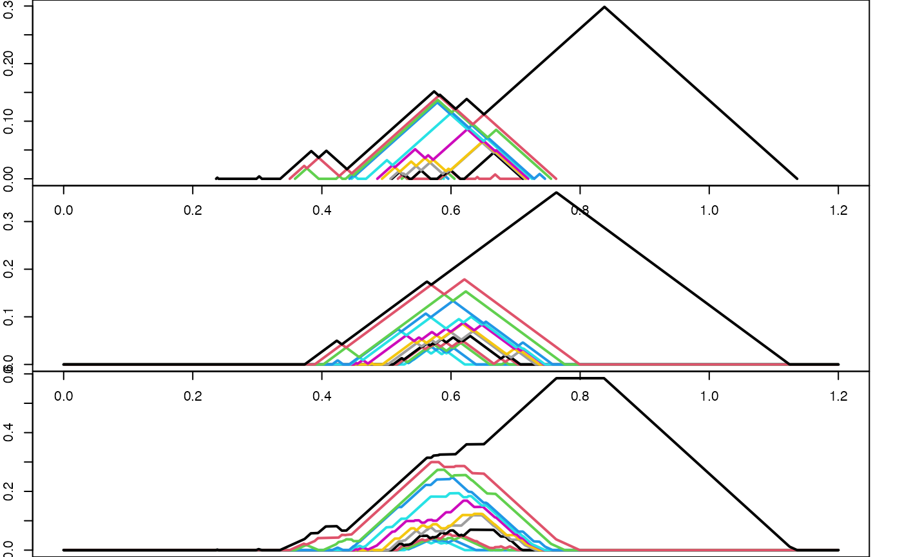

Rcpp_PersistenceLandscape-methods.RdPerform arithmetic on persistence landscapes.
# S4 method for Rcpp_PersistenceLandscape,missing
+(e1, e2)
# S4 method for Rcpp_PersistenceLandscape,Rcpp_PersistenceLandscape
+(e1, e2)
# S4 method for Rcpp_PersistenceLandscape,missing
-(e1, e2)
# S4 method for Rcpp_PersistenceLandscape,Rcpp_PersistenceLandscape
-(e1, e2)
# S4 method for numeric,Rcpp_PersistenceLandscape
*(e1, e2)
# S4 method for Rcpp_PersistenceLandscape,numeric
*(e1, e2)
# S4 method for Rcpp_PersistenceLandscape,numeric
/(e1, e2)
# S4 method for Rcpp_PersistenceLandscape,Rcpp_PersistenceLandscape
%*%(x, y)Arguments of unary and binary operators.
A persistence landscape (an object of S4 class 'Rcpp_PersistenceLandscape').
Most of these operators extend selected members of the S4 Arith group generic to the 'Rcpp_PersistenceLandscape' class:
unary and binary + and - for persistence landscapes, *, and / for
one persistence landscape (either factor or the numerator) and one numeric
(either factor or the denominator). The exception is the binary %*%,
which extends matrix multiplication to the inner product
on persistence landscapes.
arithmetic-operations
# infix arithmetic with two landscapes
pt1 <- tdaunif::sample_torus_tube(100, 2.5)
pt2 <- tdaunif::sample_torus_tube(100, 2.5)
pd1 <- as_persistence(ripserr::vietoris_rips(pt1, dim = 2L, threshold = 3))
#> Warning: `dim` parameter has been deprecated; use `max_dim` instead.
pd2 <- as_persistence(ripserr::vietoris_rips(pt2, dim = 2L, threshold = 3))
#> Warning: `dim` parameter has been deprecated; use `max_dim` instead.
pl1 <- landscape(pd1, degree = 1L, exact = TRUE)
pl2 <- landscape(pd2, degree = 1L, exact = TRUE)
# plot
par(mfrow = c(3L, 2L), mar = c(0, 2, 0, 2))
plot(pl1)
plot(pl2)
# negation
plot(-pl1)
# scalar multiplication
plot(3 * pl2)
# addition
plot(pl1 + 2 * pl2)
# subtraction
plot(pl1 - pl2 / 2)
par(mfrow = c(1, 1), mar = c(5.1, 4.1, 4.1, 2.1))
# add an exact landscape to a discrete one
pl2d <- landscape(pd2, degree = 1, exact = FALSE,
xmin = 0, xmax = 1.2, by = 0.00001)
# plot the summand landscapes and their sum with consistent parameters;
# the exact landscape is automatically converted to a discrete one
n_lev <- pl_num_levels(pl1)
par(mfrow = c(3, 1), mar = c(0, 2, 0, 2))
plot(pl1, xlim = c(0, 1.2), n_levels = n_lev)
plot(pl2d, xlim = c(0, 1.2), n_levels = n_lev)
# FIXME: This plot contains a mysterious second peak.
plot(pl1 + pl2d, xlim = c(0, 1.2), n_levels = n_lev)

par(mfrow = c(1, 1), mar = c(5.1, 4.1, 4.1, 2.1))
if (FALSE) {
set.seed(031537L)
# compute exact landscape for a large sample
pt <- tdaunif::sample_torus_tube(600, 2.5)
pd <- as_persistence(ripserr::vietoris_rips(pt, dim = 2, threshold = 3))
pl <- landscape(pd, degree = 1, exact = TRUE)
# compute exact landscapes for a large sample of small samples
pl_list <- c()
for (i in seq(100)) {
pti <- tdaunif::sample_torus_tube(100, 2.5)
pdi <- as_persistence(ripserr::vietoris_rips(pti, dim = 2, threshold = 3))
pli <- landscape(pdi, degree = 1L, exact = TRUE)
pl_list <- c(pl_list, pli)
}
# compute the mean exact landscape
pl_avg <- Reduce(`+`, pl_list) / length(pl_list)
# compute the distance between the exact landscapes
pl_diff <- pl - pl_avg
print(pl_diff %*% pl_diff)
}